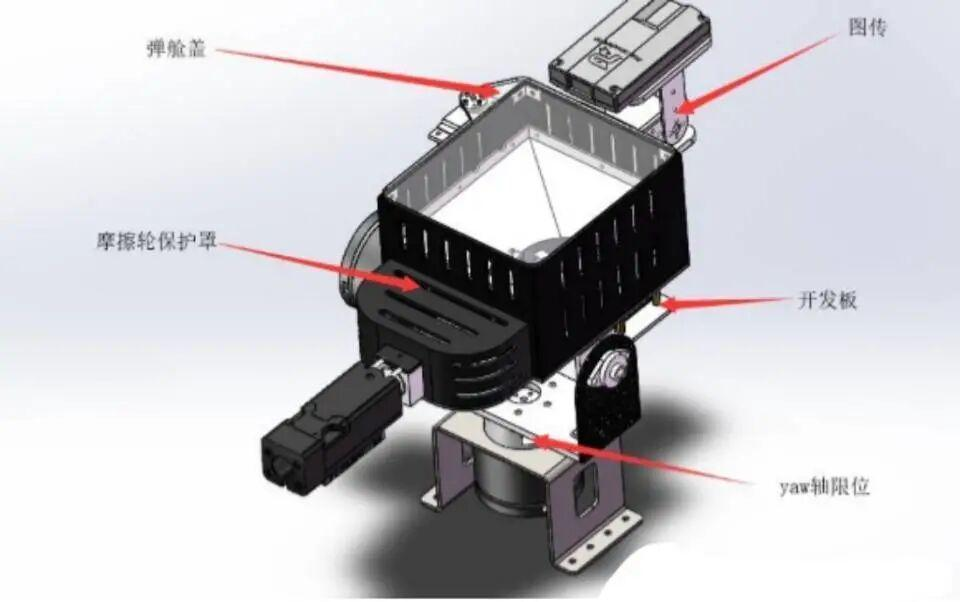
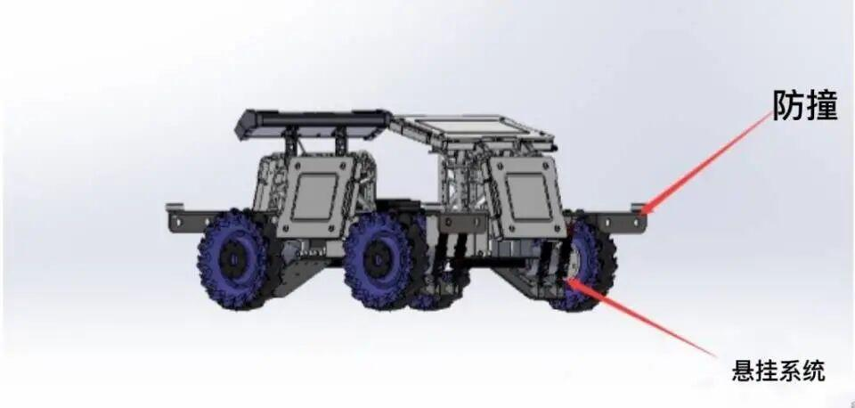

科普小知识|步兵知多少

RoboMaster 机甲大师赛
RoboMaster 机甲大师高校联盟赛中机器人兵种分为步兵机器人，英雄机器人、工程机器人、空中机器人以及哨兵机器人。今天小编为大家讲解的是步兵机器人。
01
步兵是RoboMaster机甲大师赛中的一个兵种，对战双方需自主研发步兵机器人、英雄机器人及哨兵机器人，在指定的比赛场地内进行战术对抗，通过操控机器人发射弹丸攻击敌方机器人和基地。比赛结束时，基地剩余血量高的一方获得比赛胜利。
02
步兵机器人由云台和底盘组成。

云台：控制发射机构左右上下旋转，可单独控制，不受底盘影响。

底盘：控制步兵的移动，是整个机器的基础部位。
03
步兵的特点，灵活，攻击性强，适合灵活的游走，在比赛中起到追击，攻打，消耗的作用，是最基础的战斗单位
步兵-全家福
排版|牛星月